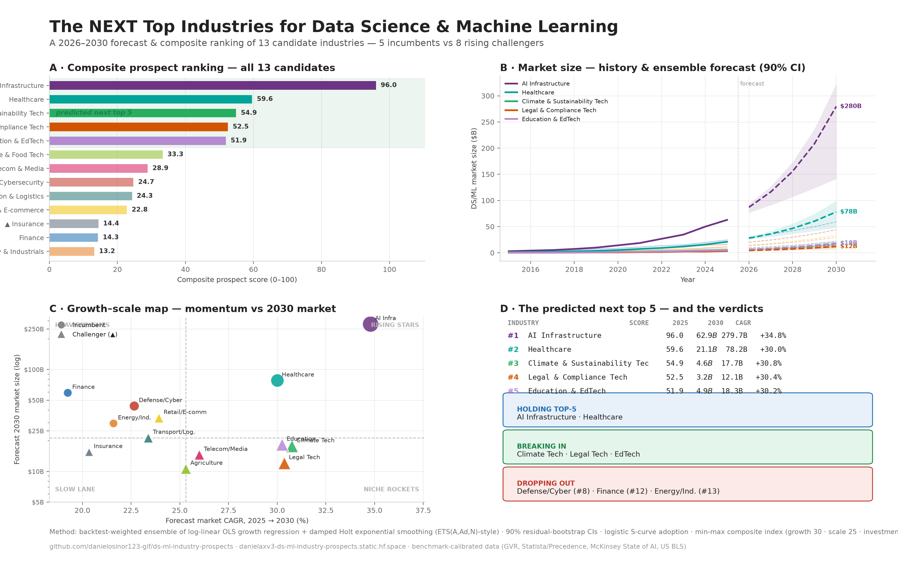

The predicted next top 5
Composite prospect index: growth 30% · scale 25% · investment 20% · jobs 15% · adoption 10% — min-max normalised across all 13 candidates.
AI Infrastructure · Healthcare
Climate Tech · Legal Tech · Education & EdTech
Defense/Cyber (#8) · Finance (#12) · Energy/Industrials (#13)
All 13 candidates, every component
Click any column header to sort. Green rows form the predicted next top-5. The instructive case: Finance has the second-largest 2030 market ($59.1B) yet ranks #12 — momentum beats size in a prospect index.
| # | Industry | Tier | Score | CAGR | 2025 | 2030 | Invest | Jobs | Adopt’30 |
|---|---|---|---|---|---|---|---|---|---|
| 1 | AI Infrastructure | Incumbent | 96.0 | +34.8% | $62.9B | $279.7B | +36.7% | +23.0% | 92% |
| 2 | Healthcare | Incumbent | 59.6 | +30.0% | $21.1B | $78.2B | +35.1% | +20.5% | 79% |
| 3 | Climate & Sustainability Tech | ↑ Challenger | 54.9 | +30.8% | $4.6B | $17.7B | +32.7% | +27.1% | 66% |
| 4 | Legal & Compliance Tech | ↑ Challenger | 52.5 | +30.4% | $3.2B | $12.1B | +32.5% | +25.7% | 67% |
| 5 | Education & EdTech | ↑ Challenger | 51.9 | +30.2% | $4.9B | $18.3B | +32.6% | +23.8% | 70% |
| 6 | Agriculture & Food Tech | ↑ Challenger | 33.3 | +25.3% | $3.4B | $10.6B | +29.3% | +21.6% | 61% |
| 7 | Telecom & Media | ↑ Challenger | 28.9 | +26.0% | $4.6B | $14.6B | +23.2% | +17.1% | 77% |
| 8 | Defense & Cybersecurity | Incumbent | 24.7 | +22.7% | $15.8B | $43.9B | +22.8% | +16.5% | 79% |
| 9 | Transportation & Logistics | ↑ Challenger | 24.3 | +23.4% | $7.5B | $21.4B | +25.2% | +17.4% | 69% |
| 10 | Retail & E-commerce | ↑ Challenger | 22.8 | +23.9% | $11.5B | $33.5B | +22.4% | +15.2% | 73% |
| 11 | Insurance | ↑ Challenger | 14.4 | +20.3% | $6.2B | $15.5B | +21.4% | +15.1% | 78% |
| 12 | Finance | Incumbent | 14.3 | +19.2% | $24.5B | $59.1B | +21.0% | +11.9% | 83% |
| 13 | Energy & Industrials | Incumbent | 13.2 | +21.6% | $11.1B | $29.6B | +18.3% | +16.5% | 69% |
Values from outputs/scores.csv (seed 42). Invest/Jobs = forecast CAGRs of investment and job postings; Adopt’30 = projected 2030 ML adoption rate. Re-weight the components and the full ranking re-computes in one run.
Visual evidence
Generated by the pipeline — history solid, ensemble forecasts dashed with 90% bootstrap bands. Click any chart to enlarge.



How the forecast works
With ~11 annual observations per series, heavyweight models (SARIMA, Prophet) would overfit. The pipeline uses two interpretable models, blended by backtest, with honest uncertainty.
Data panel
13 industries × 2015–2025 × 5 indicators: market size, investment, job postings, ML adoption, AI patents. Benchmark-calibrated; runs on real data via --from-csv.
Ensemble forecast
Log-linear OLS growth regression + damped Holt exponential smoothing. Weights learned on a 3-year holdout (∝ 1/MAPE); 90% residual-bootstrap intervals from 1,000 mixture-simulated paths.
Composite index
Min-max normalised across 13 candidates (OECD/JRC methodology): growth 30 · scale 25 · investment 20 · jobs 15 · adoption 10. Adoption fitted with logistic S-curves (Pearl–Reed).
Ranking & report
Composite scores, hold / break-in / drop-out analysis, 7 charts and a full written report — all generated by python main.py, seeded and reproducible.
pip install -r requirements.txt && python main.py → data → forecast → score → charts → report, in ~10 seconds.Data provenance, stated plainly
The bundled dataset is benchmark-calibrated — every 2025 value sits inside published ranges. The pipeline is data-agnostic: swap in a real panel and every downstream step runs unchanged.
Calibration sources
- Grand View Research — AI in Healthcare, Insurance, Education, Legal markets
- Statista / Precedence Research — AI market size by industry (BFSI, energy, retail, infrastructure)
- McKinsey — The State of AI (adoption by industry & function)
- US Bureau of Labor Statistics — Data Scientists occupational outlook
- WIPO / Stanford HAI AI Index — patent activity & investment trends
- Real-data upgrade: Stanford HAI, BLS OES, Lightcast, Crunchbase, WEF
Known limitations
- Calibrated synthetic inputs — not scraped primary data (swap via --from-csv)
- Challenger-pool selection is a judgment call (config-driven, extensible)
- Momentum-weighting favours small, fast bases over large, slow ones — deliberate and re-weightable
- ~11 observations per series; bootstrap CIs assume iid innovations — indicative, not exact
- Logistic adoption model assumes a stationary ceiling per industry
- No shock/regulatory scenario modelling (an AI act or defence surge would move these numbers)
- Sector overlap: AI Infrastructure supplies the other sectors — some double counting